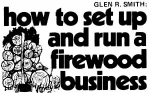

Cutting and splitting wood on a brisk October day can be great for the spirit. It can also be good for the pocketbook, if you're willing to sell the fruits of your labor.
Here in the Fort Collins region of Colorado-as elsewhere in North America-the sale of firewood has skyrocketed since the so-called "energy crisis" of 1973-74. One old-timer in the business tells me he's doubled his earnings in just the past year . . . and he still can't keep up with the demand for kindling and split-out fireplace logs. The same products seem to be selling just as well in other parts of the country, and any able-bodied homesteader looking for part-time or seasonal income need look no further than the firewood business to find it.
Good, reliable tools are a must for any lumbering or logging enterprise ... and the harvesting of firewood is no exception. The axe, of course, was the prime implement used by a woodcutter "in the good old days" and-while no longer as important as it once was-still comes in handy a hundred times a day when you're working out in the woods. Get the best one you can buy, either single-bitted (bladed) or double-bitted, and keep it razor sharp at all times (it's the dull axe that glances off a hard knot and slices into your leg) . Remember, too, that an axe should never be used to drive a wedge (that's what sledgehammers and mauls are for) ... so go ahead and buy a sledge while you're in town getting your axe and wedges. (For a concise but very exhaustive illustrated guide to the proper use of an axe, read "Basic Axemanship", pages 32 - 37 in MOTHER NO. 7. - THE EDITORS.)
A good Swede or buck saw can also pay its way in this business even though, as everyone knows, the gasoline-powered chain saw is the piece of equipment that really sets the pace in any timbering operation today. There are a num ber of worthy brands currently on the market ... so look I em all over, talk to the people in your area who use chain saws a lot, and make your choice. If you have to err any in your final decision, err in favor of one of the machines that's built for just a little heavier duty than you think you'll ever give it. (You'll probably wind up spending from $200 to $300 for the saw.) And then treat that chain saw with both a great deal of respect and care. Used thoughtlessly, one of the machines will give you endless trouble and can-without any advance warning-cripple or even kill you. But treated with respect and properly maintained, that same saw will serve you long, faithfully, and well ... and allow you to cut ten times as much wood in a day as you could harvest with any other equipment.
Most of the woodcutters in my part of the country use pickups, ordinary trailers, or whatever larger trucks they happen to have for hauling cut and split logs out of the woods and to their customers' homes. Sooner or later, however-if you really want to go into this business in a big way-you'll want to get a low-boy trailer. Such a rig sits right down close to the ground so you don't have to throw those chunks of firewood so far up to load it or so far down when you're unloading the carrier. And once you've handled your first 40 or 50 cords of cut and split fuel, you'll appreciate just how much that can mean.
By far the most important piece of equipment that any modern woodcutter can own (even more important than a chain saw) is a powered log splitter of some sort. (Seepages 86 - 87 of this issue for a report on the newest, least expensive, and - we think - all-round best log splitter on the market. - THE EDITORS.)
The labor-saving value of a log splitter to the serious wood seller cannot be overstated. Try to split out a cord of wood by hand (as most of the dealers around here do ... helped by their wives, children, relatives, and friends) and you'll be lucky if you put any less than ten hours into the job. Split that same cord with a powered splitter, on the other hand, and you'll be finished in an hour. Obviously-even after you allow for fuel and wear and tear on your machine-you're going to be able to offer your customers a better price and still net more for yourself if you own a powered splitter.
Of course, a hydraulic log splitter isn't inexpensive. New, one will cost you from around $1,500 all the way up to $4,000 or more. If you can weld, though, and you're a good scrounger of junkyards, you can build your own for under $500. (Why bother. The Stickler - see pages 86 - 87 of this issue - is faster than almost every hydraulic splitter on the market, is more trouble-free, probably less dangerous... and costs only $199! And if it sounds as if we're sold on the Stickler, we are. - THE EDITORS.)
One final word on equipment: A piece of land big enough to stack your split wood on and located along a busy highway is as important a selling "tool" as you can have. If folks can see your firewood as they drive by (and see it in time to stop), you'll dramatically increase your opportunity to make sales.
Very few of the firewood dealers in this area actually buy the trees they cut. Instead, they [1] legally harvest marked trees from the nearest national forest, [2] thin dead and dying trees from private forests, fence rows, lots, and other property, [3] recycle the top four feet or so-which would otherwise go to waste-that most sawmills discard from each log they rip into boards, [4] offer to cut up and haul away downed trees from yards, lots, etc., after severe windstorms, or [5] find yet another way to collect their raw materials at no cost. I only know of one man in the business who cuts timber on a friend's land, hauls it into town, splits it, sells the wood . . . and then gives part of the proceeds to the fellow who owns the land. There's generally just too much wood around, free for the cuttin', to make that kind of a deal worthwhile.
Bear in mind, at all times, that the season of the year and the day-by-day weather your area experiences will have a very decided effect on your firewood sales. Late fall, winter, and early spring-obviously-is the time of the year when you can expect to really move those cords of wood. Perhaps not so obvious, however, is the effect that daily weather can have on your business. When the mercury takes a sudden dip, you're liable to sell three cords of cut and split wood in a single afternoon. Let the thermometer soar during the following 24 hours, though, and you might be lucky to get a call for a single automobile trunkload of kindling. You'll find this venture much more enjoyable once you've learned to philosophically ride these ups and downs: use the lag time to stock up in anticipation of the next cold snap.
Most of the dealers I've talked to sell a cord (a stack four feet high, four feet wide, and eight feet long) of wood for between $40 and $55. Half-cords go for $20 to $35. A face rick (any length of log stacked four feet high and eight feet long), on the other hand, sells for $30. Buyers generally look for the least expensive cord that a dealer will deliver.
Advertise in the want ad sections of your local papers and-if you live on a busy street-set up a sign outside your house. That should be about all the "real" promotion you'll need for this venture.
It never hurts the business, though, when you throw in a little something extra in the way of service. Don't, for instance, limit yourself to the sales of cords and half-cords only: If someone drives out to your place and asks just for as much wood as he or she can fit into the trunk of a car ... make the sale and do it with a smile. Chances are that customer will be back for a full cord sooner or later. And when you sell those full cords, throw in some kindling at no extra cost. It'll soon become one of your most appreciated promotions.
Few buyers of firewood, it seems, own a pickup truck or a trailer. Most of your customers, then, will call in their orders (in response to your newspaper ads) and ask you to deliver the wood they purchase. And they'll usually want that delivery NOW.
Tip Number One: Don't accept orders that must be delivered more than 20 miles from your place of business unless you have a clear understanding that you'll be paid extra for the service. you simply won't be able to afford the mileage.
Tip Number Two: Always give yourself enough time to make a delivery . . . even if your truck breaks down and everything else that could possibly go wrong does go wrong. Your customers will stay far happier if you promise delivery in "three or four days" and make good in one . . . rather than the other way around.
You'll find it worthwhile to write down the name and address and-if possible-telephone number of everyone who buys firewood from you. Then contact all your customers early next year ... before cold weather inspires them to lay in a new stock of fuel. By the time that first winter storm hits, you'll have gotten the jump-by several sales-on every other dealer in your area.
If you already have a good vehicle that's capable of hauling the logs you cut and you build your own splitter (or buy a Stickler!), you should be able to get into the firewood business for under $800. And-if you only work the venture on a part-time basis-you certainly won't get rich your first year (when you're paying off your equipment at the same time you're spreading the word about your new service). But by the second and third season of operation, you should be clearing between $1,500 and $2,500 a year. . . depending on the weather, how well you maintain your tools, and how energetic you are.
And that's not too bad for a spare-time, seasonal source of income that you can run at your own pace and in your own way ... almost anywhere in the country.
Reprinted by permission from THE Mother Earth News Handbook of Homemade Power (Bantam Books, $1.95) copyright 1974.
New, used, or converted from a drum, make sure your woodburner is located well away from all walls and high enough so that its heat will not set your room's linoleum or floorboards on fire. Just to be extra safe, set the heater on an asbestos pad and place a fireproof shield between the stove and any nearby flammable curtains, panels, furniture, etc.
Correct placement, construction, and operation of stovepipes, chimneys, and flues-although actually quite simple-can often completely baffle a fresh convert to wood heat and I'd be foolish to try to explain a "typical" vent system here. Consult with the folks at your local hardware store if you buy and install stovepipe ... or pay a reputable sheet metal shop to do the job for you. Just make darn sure that whoever does the task insulates adequately any ceilings or sections of roof through which the flue is run.
If you don't feel qualified to saw out your own firewood, the chances are good that you'll pay someone to cut and deliver the fuel to you. And, more than likely, that someone will quote you a price "by the cord".
Now a cord of firewood is supposed to be a fixed measure (a stack 8' long by 4' wide by 4' high) of 128 cubic feet. Depending on how that stack is put together, however, you can get somewhat more or a good deal less fuel than you think when you buy one.
Due to the open spaces between a few, large logs-for instance-the buyer of a cord of firewood made up of such timbers will receive somewhat less for his money than the purchaser of a cord composed of carefully selected and closely stacked random-sized logs. It stands to reason, then, that you'll got more for your money if you specify that some small kindling sticks be mixed with the large-diameter timbers in any cord of wood you buy.
You should also bear in mind that a cord of softwood usually weighs out to slightly more than a ton while the same measure of hardwood tips the scales in the neighborhood of 1-3/4 tons. Hardwood, obviously, is the better bargain.
There's yet another consideration to take into account when you plunk down money for firewood: Every tree is slightly different and each variety has a heating value all its own.
Shellbark hickory is just about the best natural fuel you're likely to be offered on today's firewood market. If you assign it a heating value of 100, you'll find that pignut hickory rates about 95, white oak comes in at 84, white ash stands at 77, and dogwood ranks 75.
Apple fat (70), red oak (69), white beech (65), and black walnut (65) are next in line ... followed by black birch (62), yellow oak (60), white elm (58), and hard maple and red cedar (both rate 56), Wild cherry at 55, yellow pine's 54, yellow poplar with 51, butternut's 43, white birch at 43, and white pine with a rating of 30 bring up the rear.
To keep the insects that sometimes hide under a log's bark out of your house, store all firewood outside and at least 20 feet from your home. Bring it in only as needed.
Any edition of the Boy Scout's Handbookwill show you how to "lay" a fire that will start (and continue) burning on the first match. After that it's merely a matter of experimenting with your particular heater for a few days until you learn to regulate the blaze with draft (down on the stove) and damper (up on the flue). You'll figure out soon enough that a big steady bed of hot coals is better than a series of roaring flames punctuated by cooling-off periods. A couple of big chunks that burn slowly, in other words, will maintain a comfortable temperature far better than any combination of kindling, branches, or shavings.
|
 |
|
|